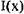
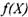
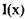
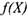
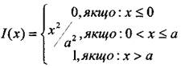
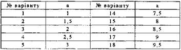
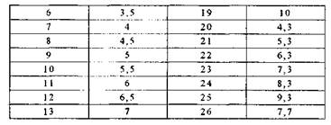

ЗАВДАННЯ ДЛЯ САМОСТІЙНОЇ РОБОТИ № 7
Випадкова величина задана функцією розподілу . Знайти кількість ймовірностей ; імовірність того, що в результаті випробувань набуде значення, що належить проміжку (1;2); математичне сподівання; дисперсію та середнє квадратичне відхилення цієї випадкової величини; побудувати графіки функції та

Таблиця значень.

